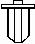
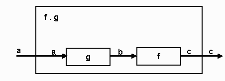

Haskell
© Eileen Head, Leslie C. Lander, 2000
Propose: To learn the functional style of programming. Records,
lists, user types and function types will be discussed.
Notes1.lhs
has codes presented in these notes as well as other examples.
Old business: Activation Records
Functional Programming and HUGS
-
Slides in HTML format: http://bingweb.binghamton.edu/~head
-
To a large extent the notes are based on the information in the excellent
text: Simon Thompson, Haskell: The Craft of Functional Programming,
2nd edition Addison-Wesley Longman, 1999…
-
…and A Gentle Introduction to Haskell, Version 98, available on-line: http://haskell.org/tutorial/
-
The slides were developed in collaboration with Prof. Les Lander.
-
Haskell was the first name of H. Curry, a logician in the 30's and 40's.
He will be mentioned again.
Why not Lisp? - It’s well-known
-
Lisp is basically functional but has many imperative-language constructs,
for example:
-
sequences of commands
-
loops
-
goto (!)
-
Lisp is widely used in artificial intelligence because it is good for symbolic
processing.
-
Syntax is not user friendly.
Haskell
-
Haskell is a purely functional language and puts modern functional language
theory into practice
-
Haskell has a lot in common with Miranda but the HUGS interpreter is free
-
Many features of Miranda and Haskell are similar to those of Robin Milner’s
ML (meta-language)
Features
-
Haskell is a strongly typed functional language that became available in
the 90s
-
Strong typing helps ensure program correctness
-
As in ML, most of the strong typing can be discovered by the interpreter;
thus saving the programmer a lot of time defining types
Why functional programming?
Learning functional programming helps programmers formulate good specifications
for programs.
Good specification may allow automatic code generation and verification.
Learn about specification before you are out of a programming job!
Correctness
-
Programming language theorists can reason more easily about the correctness
of a functional-language program
-
For a given input a functional-language function always gives the same
output
-
Global variables and values stored in memory play little role
The functional approach
-
The functional aspects of Haskell
-
Computation = function calls (applications)
-
Computation != a sequence of changes to the values of variables
-
Treat functions like any other type
-
Allocation of storage is automatic
-
Deallocation of storage is automatic (garbage is collected)
-
Lazy parameter evaluation
Data types
-
The data related aspects of Haskell:
-
user defined recursive data types
-
polymorphic types which describe families of types
-
list comprehension
-
inference of the correct types
-
pattern matching
-
The ADT aspects of Haskell:
-
modules;
-
provides a mechanism for hiding and exporting data and functions
Mathematical functions
-
A function f is a rule that takes an input value x and returns
a value f (x) or f x
-
The inputs x belong to a set X (called the domain of f
).
-
The values y = f (x) belong to a set Y (called
the range of f ).
-
We write f : X -> Y.
Examples
-
Functional programming refers to writing a program as a set of functions
-
Functions are defined in the script
-
"=" means defined as
> sq x = x^2
> cube x = x *(sq x)
Haskell determines the type of the functions:
"::" means has type
...> :t sq
sq :: Num a => a -> a
Specifying types
-
You can direct Haskell to attach the types the way you want them
-
If you want "py" to be a Float rather than the Double type determined by
HUGS, insert the type in the script
> py :: Float
> py = 3.14159
Constraining the function "sq"
> sq :: Int -> Int
> sq x = x^2
Guards
-
Functions with alternatives: (using guards)
> factorial :: Int -> Int
> factorial x
> | x < 0 = error "neg x"
> | x == 0 = 1
> | otherwise = x * factorial(x - 1)
Use the type information to avoid defining a factorial function for decimals
Haskell picks the most general type
> fact1 x
> | x < 0 = error "neg x"
> | x == 0 = 1
> | otherwise = x*fact1(x-1)
We would find:
...> :t fact1
fact1::(Ord a,Num a) => a->a
the input must be in the intersection of classes Ord and Num
Problems with Int
...> fact1 3.7
Program error: neg x
...> factorial 3.7
ERROR: Illegal Haskell 98 class constraint in inferred type
*** Expression : factorial 3.7
*** Type : Fractional Int => Int
Next note:
...> factorial 13
1932053504
When it should be 6227020800 (= 1932053504 + 2 * 232)
Large numbers
-
Functional languages like Lisp have traditionally been good calculators:
> factorial1 :: Integer -> Integer
> factorial1 n
> | n < 0 = error "neg n"
> | n == 0 = 1
> | otherwise = n * factorial1 (n - 1)
Integer expands with magnitude
Factorials of 50 and 500
-
Load Haskell and load a script containing the definitions of factorial.
Then try "factorial1 50" and "factorial1 500"
Part of factorial of 3500
-
Continue by trying "factorial1 3500." You may have to wait quite
a long time for the answer.
Simple syntax
-
Notice how writing a Haskell function is like doing mathematics:
-
Define the factorial function f as (N0 denotes the natural numbers):
f : N0 -> N0
/ 1 n = 0 or 1
f(n) = <
\ n*f(n-1) otherwise
The biggest difference is that programmers use long names for their functions!
Limitation of expressivity of types
-
We have the difficulty that we cannot exclude negative numbers so easily
> factorial1::Integer -> Integer
> factorial1 n
> | n < 0 = error "neg n"
> | (n==0) || (n==1) = 1
> | otherwise = n * factorial1(n-1)
Type system
-
Haskell’s type system has unusual features and is quite rich
-
Haskell is statically typed
-
Haskell is a purely functional language
-
ALL computations are done via evaluation of expressions to yield values
Types and values
-
Every value has a type
-
Functions are values
-
Values are first class, that is, they can be passed as arguments to functions
-
Types are not first class
Predefined types
-
Some basic atomic values and types:
-
Predefined datatypes
Int, Bool, Char, Float, ...
also Double, Integer
read "::" as "has type"
5 :: Int
5.0 :: Float
Float & Double need a decimal point or an exponent: 5.0
'a' :: Char
Char: the character type, 'a', 'P', '<',
etc. ASCII codes can be used: '\65'. Version 1.4 has started
to use Unicode.
"aba" :: String
Later we use keyword type to define synonyms. A new type is not defined
but a new name is given to an existing type. (Like typedef in C)
Structured types
-
Structured values
-
List Processing is what gave LISP its name and strength:
Lisp allows structures of nested lists and each element of the list or
nested list can have a different type
-
Non-homogeneous lists have proved to be very flexible structures, supporting
artificial intelligence and other sophisticated applications
Lists
-
Haskell lists are NOT like Lisp lists, they have to be homogeneous
-
They are dynamic (can change length during execution)
-
homogeneous list of Ints
[1,2,3] :: [Int]
(actually ...>:t [1,2,3] gives [1,2,3]::Num a => [a])
homogeneous list of Bool
[True,False,False]::[Bool]
Strings
-
The literal syntax of string is a list of chars. Prelude defines
string
type String = [Char]
"aba" is shorthand for ['a','b','a']
We will visit lists many times.
By the way, this cursor indicates Haskell is garbage collecting 
List operations
-
For now, the important operations:
1:[2,3,4] = [1,2,3,4]
4:[] = [4]
head [1,2,3,4] = 1
tail [1,2,3,4] = [2,3,4]
init [1,2,3,4] = [1,2,3]
last [1,2,3,4] = 4
Tuples
-
There are non-homogeneous linear structures like the “struct” of C or the
“record” of Pascal and Ada:
-
They are called “tuples”
('x', 99) :: (Char, Int)
type Person = (String,Int)
Compare
struct person {
char * name;
int i;
}
Another example:
type Zip_code = (String, Int)
First letter must be capital letter, you cannot use "zip_code" or "Zip-code"
vestal :: Zip_code
vestal = ("NY", 13850)
fst vestal returns NY
snd vestal returns 13850
type just creates a synonym and not another data type
User-defined types
-
User Defined Types: type constructors
-
union type:
data Color = Red | Blue | Black
Red, Blue and Black are data constructors of the type Color
Example of a predefined type
data Bool = True | False
Product types
-
Product type is an alternative to tuples
type Name = String
type Age = Int
data People = Person Name Age
x = Person "John" 25
A function to show x
showPerson :: People -> String
showPerson (Person n a) = n ++ " aged " ++ show a
Polymorphic data types
data Point a = Pt a a
This is a polymorphic data type: it works for any type “a”
Pt 2.0 3.0 :: Point Float
Pt 'a' 'b' :: Point Char
Pt True False :: Point Bool
A function to extract the individual values would be:
firstCoord :: Point a -> a
firstCoord (Pt m n) = m
Function types
-
Functions are values and have a type
\x -> x+1,
this is a lambda expression, type: Num a => a -> a
Functions are normally defined by an equation or series of equations
inc n = n + 1
(alternatively: inc = \n -> n + 1)
The type signature declaration is used to declare the explicit type for
a function
inc :: Int -> Int
...
Type inference
-
… or the type system can infer the correct type.
-
In the tutorial, Hudak et al. use e1 => e2
to indicate that e1 reduces to e2
inc ( inc 3 ) => 5
We can compose functions:
-
(f . g) x is effectively f (g x)

...> (inc . inc) 3
5
Or in the script (like math f o g) :
inc2 = inc . inc
-
What is the type of inc and inc2?
Currying
-
In the development of functional notations as a model of computation, it
has been important to concentrate on functions of one variable
-
Curry did considerable work in the area. The idea is often used today in
mathematics.
Currying a function
f : X x Y -> Z
can be thought of as a function
fc:X -> (Y -> Z)
where (Y -> Z) is the set of functions from Y to Z
The idea is: fc(x) is the function given by
fc(x)(y) = f(x, y)
It is not a difficult idea
Example:
-
I want a function "extract" that is given two integers "min" and "max"
and a list of integers "list" as input
-
The result of the function must be a list of all those numbers in "list"
that do not lie between "min" and "max" (inclusive), e.g.
...> extract 3 5 [1,5,4,6,3,2,1]
[1,6,2,1]
Consider
> extract::Int->Int->[Int]->[Int]
> extract min max list
> |list == [] = []
> |otherwise = extractNonEmpty min max list
> where
> extractNonEmpty min max (a:x)
> | (a >= min)&&(a <= max) = extract min max x
> | otherwise = a:extract min max x
Alternatively
> extract1::Int->Int->[Int]->[Int]
> extract1 min max [] = []
> extract1 min max (a:x)
> | (a >= min) && (a <= max) = extract1 min max x
> | otherwise = a:extract1 min max x
Functions derived from extract:
In the script:
> extractOver8 = extract 8
> extractBetween8and16 = extract 8 16
In the interpreter:
...> :t extract
extract :: Int -> Int -> [Int] -> [Int]
...> :t extractOver8
extractOver8 :: Int -> [Int] -> [Int]
...> :t extractBetween8and16
extractBetween8and16 :: [Int] -> [Int]
Regular logs from general logs
logBase::Float->Float->Float
The function that returns the logarithm of a number using base 10:
...>:t logBase 10
logBase 10 :: Float -> Float
Apply the function logBase 10 to 100
...> logBase 10 100
2
Maximum of 3 numbers
-
The following function finds the maximum of three integers:
> maxOf3Ints :: Int -> Int -> Int -> Int
> maxOf3Ints x y z
> | x >= y && x >= z = x
> | y >= z = y
> | otherwise = z
Deriving other functions
-
Fix one of the numbers to be 7
> maxOf7and2Ints = maxOf3Ints 7
Example execution:
...> :t maxOf7and2Ints
maxOf7and2Ints :: Int -> Int -> Int
...> maxOf7and2Ints 1 10
10
Fix two of the numbers to 7 and 9
> maxOf7_9and1Int=maxOf7and2Ints 9
Example execution:
...> :t maxOf7_9and1Int
maxOf7_9and1Int :: Int -> Int
...> maxOf7_9and1Int 3
9
Fix all three numbers to 7, 9 and 5
> numberNine = maxOf7_9and1Int 5
Example execution:
...> :t numberNine
numberNine :: Int
...> numberNine
9
Using where
-
where can be used for more readability
quadroot :: Float -> Float -> Float -> [Float]
quadroot a b c
| delta < 0 =
error "complex roots"
| delta == 0 = [term1]
| delta > 0 = [term1+term2,
term1-term2]
where
delta = b*b
- 4*a*c
radix = sqrt
delta
term1 = -b/(2.0*a)
term2 = radix/(2.0*a)
-
Compare with with a code from Pascal
type root_list = ^root_type;
type root_type = record
root: real;
next root_list
end;
function quadroot( a, b, c: real): root_list;
var delta, radix, term2: real;
roots, temp: root_list;
begin
roots := NIL;
delta := b*b - 4*a*c;
if delta < 0
then write(‘Error: Complex Roots’);
else begin
radix := sqrt(delta);
term2 := radix/(2*a);
new(temp);
roots^.next:=temp;
temp^.root := roots^.root - term2;
roots^.root := roots^.root + term2;
temp^.next := NIL
end
end;
quadroot := roots
end;